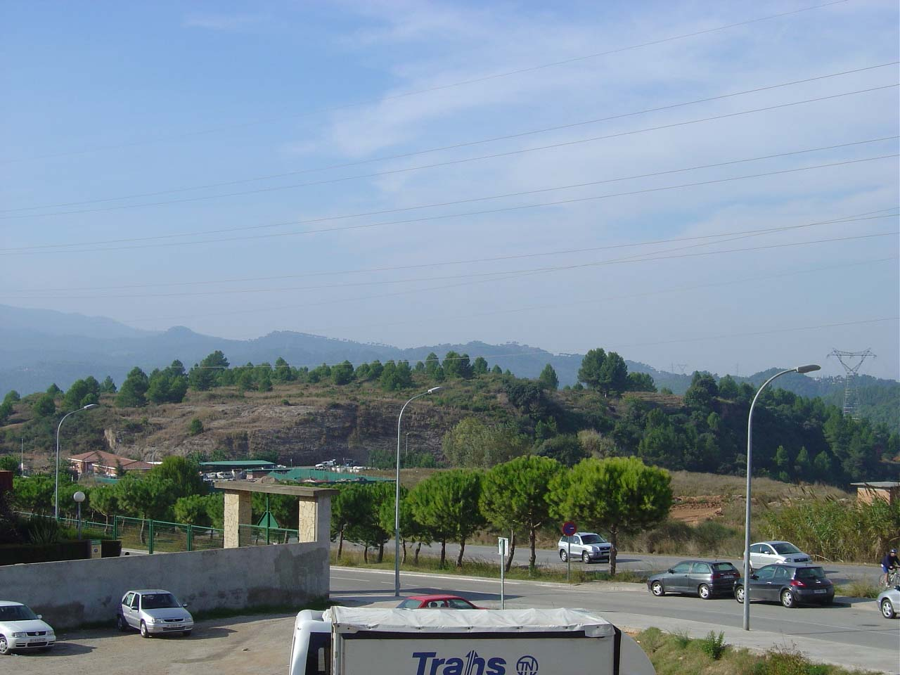
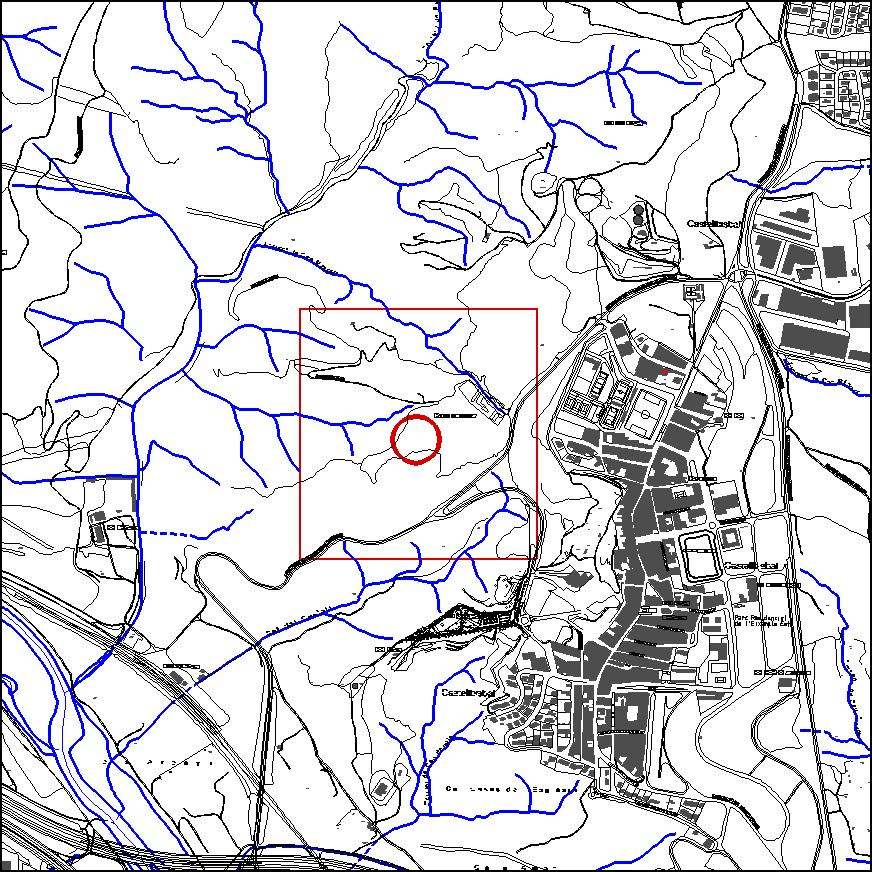

|  |  |
Nom de l’element: Turó de la Verdulaga
Clau d’identificació: D.08
Nucli o indret: Ctra. BV 1501 de Castellbisbal a l’estació de la RENFE.
UTM: X= 414.383, Y= 4.592.614, 151 m snm.
Règim del sòl: Sòl no urbanitzable.
Característiques:
Turó que acull un bosc adult de pi amb sotabosc poc dens i alt, amb una important cobertura de prat. Presenta una altitud màxima de 151 m snm. Ha patit moviments de terres, especialment al 1968, i una forta erosió natural. S’hi ha trobat 2 esquelets humans i recipients de fang d’antiguitat datada del 2000 aC (Museu Municipal de Molins de Rei).
1.2. Estat de conservació:
Bo.
1.3. Ús actual:
Ecològic i històric-arqueològic.
1.4. Accés:
Accés fàcil des de la carretera BV 1501, el Camí de la Ubagueta o bé des del Camí de la Solèia.
Valor ecològic (diversos tipus de cobertura vegetal) i potencial arqueològic.
3.1. Usos admesos:
Espais lliures, recreatiu cultural.
3.2. Condicions d’ordenació:
Segons Pla Especial a redactar.
3.3. Accés
Carretera BV 1501, el Camí de la Ubagueta o bé des del Camí de la Solèia.
BCIL (Bé Cultural d’Interès Local)